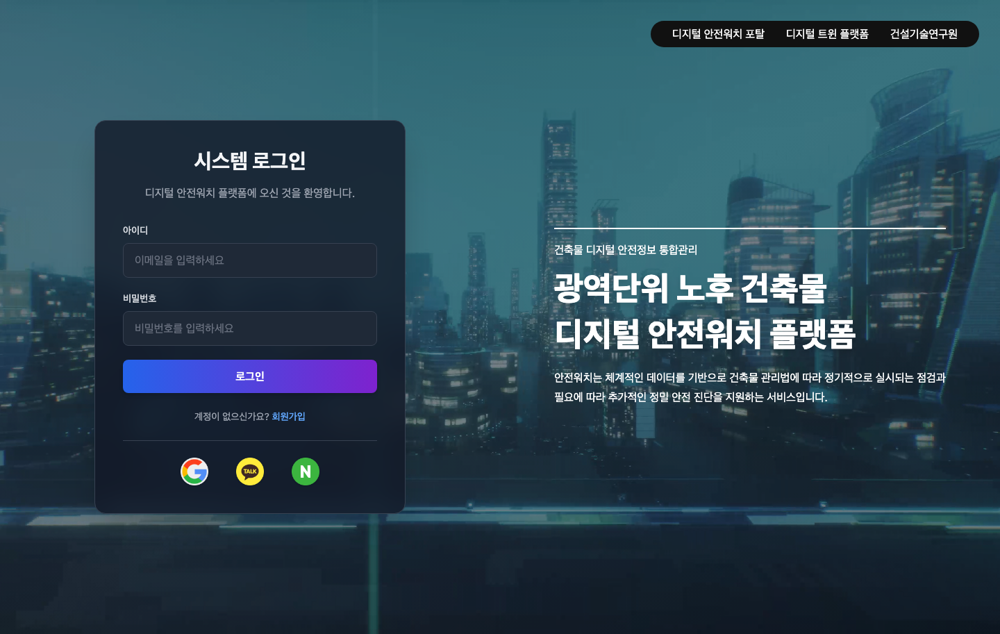
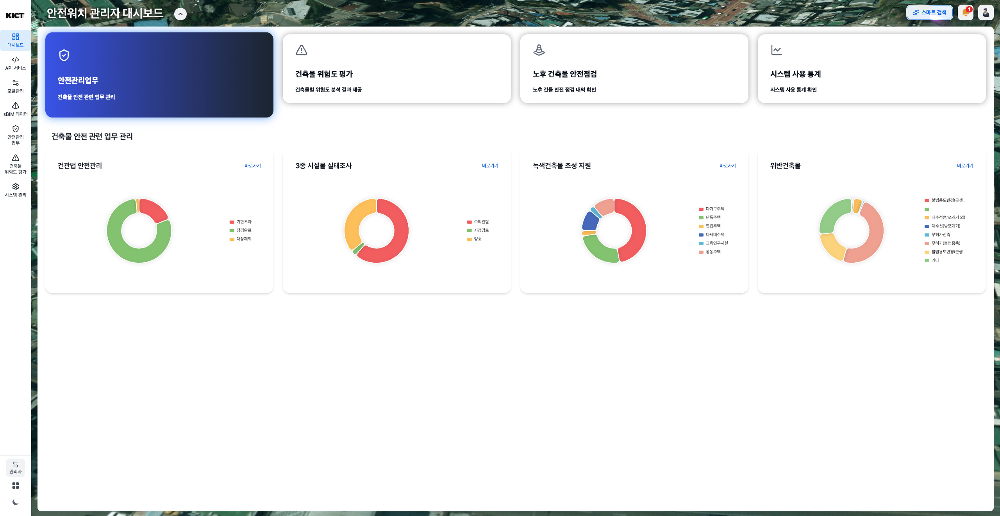
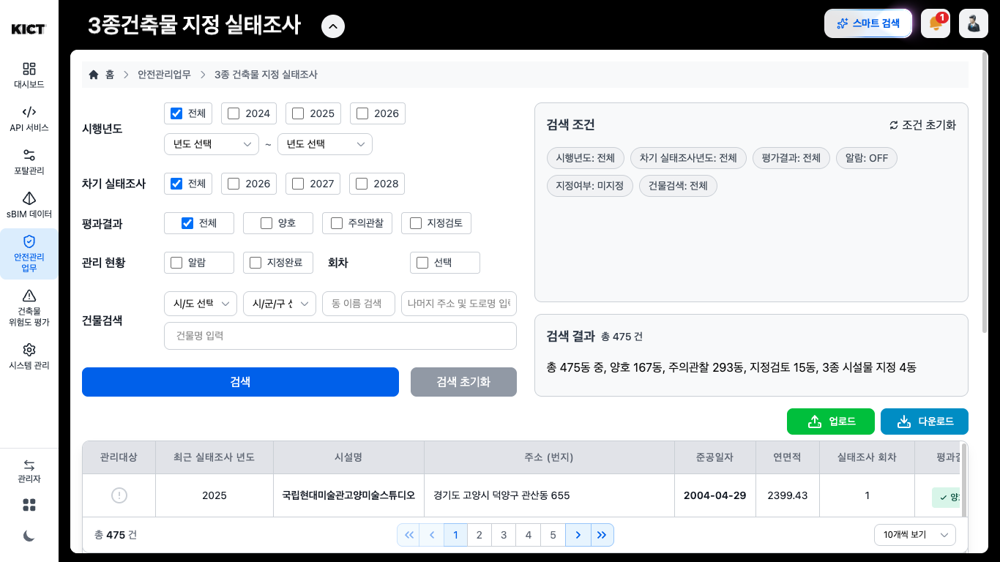
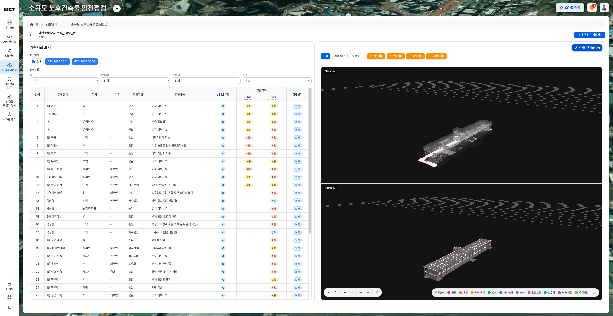
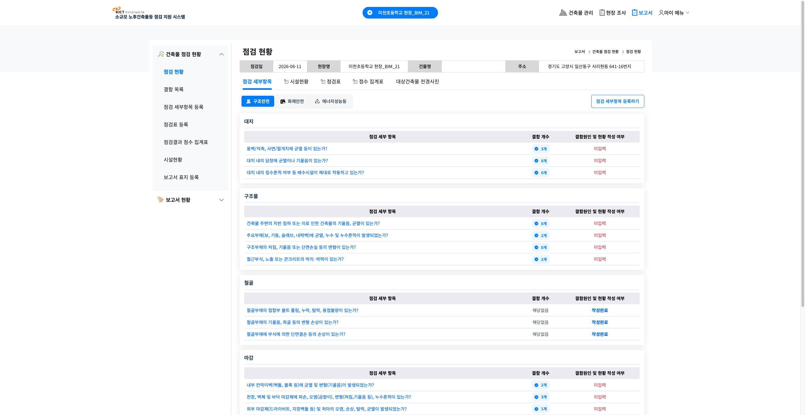
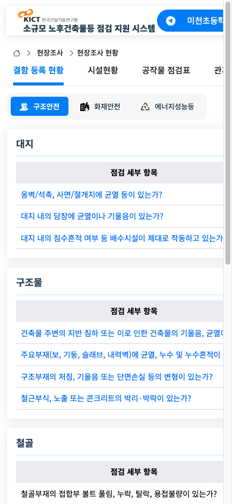
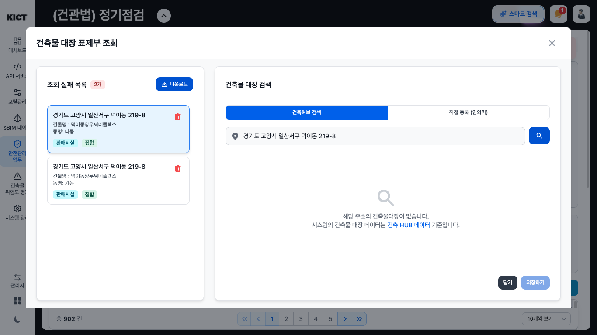
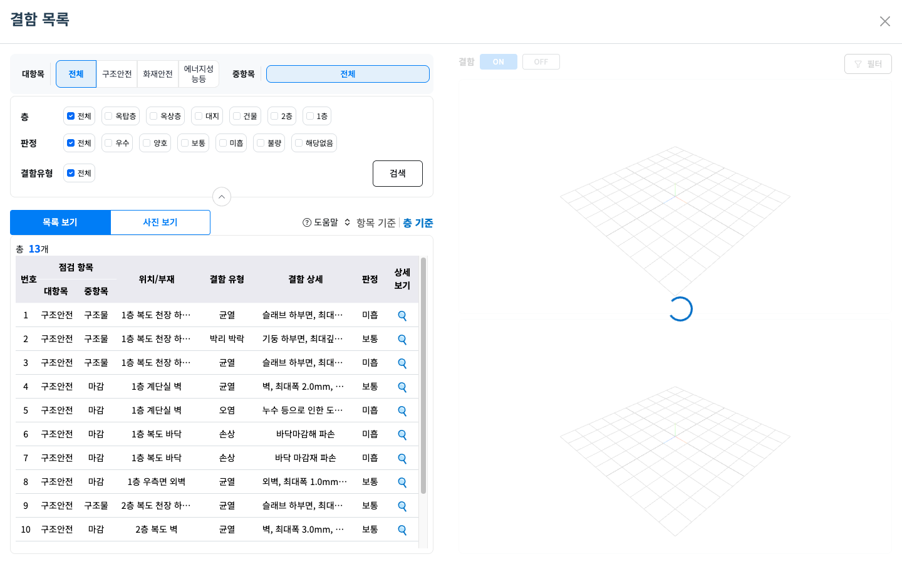

안전워치 노후건축물 안전진단 관리 UX 개편 제안서
검토일: 2026-09-15 · 대상: BLCM 업무에 익숙한 지자체 공무원·점검/진단 전문기관 담당자
사용자 유형별 진입 보강: 공통 메인 왼쪽에 공무원·전문기관 업무를 우선 배치하고, 오른쪽에 비로그인 GIS+sBIM 정보조회를 보조 경로로 두었다. 관리·검토 대상 노후건축물로 서비스 범위를 명확히 하고, 재접속 복원·별도 지도 분석·이전 화면 복귀를 제공한다. 보강 이유 자세히 보기
함께 보는 결과물: 클릭 가능한 전체 시안 · 42개 화면과 개편 이유
1. 결론: 담당자의 업무와 한 건의 처리 흐름을 서비스의 중심으로
현재 플랫폼은 지도, 행정업무 목록, sBIM, AI 결함탐지, 현장조사, 보고서 등 필요한 기능을 상당 부분 갖추고 있다. 그러나 사용자에게 보이는 구조는 기술과 시스템 모듈의 구분을 강하게 따른다. 담당자는 자신의 업무를 수행하면서 먼저 어느 시스템·메뉴에서 처리해야 하는지 판단해야 한다.
주 대상은 안전진단 관리가 필요하거나 필요 여부를 검토해야 하는 노후건축물이다. 초기화면 왼쪽의 업무 로그인에서 개인 작업 대시보드로 들어가며, 비로그인 공개 정보조회는 오른쪽의 보조 서비스로 제공한다. 노후하다는 이유만으로 위험 또는 법정 안전진단 대상으로 판정하지 않는다.
개편의 중심은 다음 세 가지다.
- 역할별 업무 시작점: 공무원은 관할 업무와 확인할 건, 전문기관은 담당 점검과 작성·보완할 보고서에서 시작한다.
- 노후건축물과 점검건의 연결: 지도·대장·현장사진·BIM·보고서로 이동해도 같은 건축물, 동, 점검유형, 회차를 유지한다.
- 상태와 다음 행동의 연결: 기한, 현장조사, 보고서, 외부시스템 처리, 데이터 연계 상태를 구분하고 현재 사용자가 할 수 있는 일을 제시한다.
지도는 관할지역의 분포 파악과 대상 선별에서 핵심 도구로 유지한다. 반복적인 점검현황 확인·보고서 작성·검토에서는 목록과 점검건 상세가 기본 작업 공간이 된다.
먼저 읽는 핵심 분석 — 현재 화면이 왜 불편할 수 있는가
① 출근해서 ‘내가 처리할 건’을 찾고 싶은데, 먼저 지도가 보인다.
- 현재 화면: 로그인 후 지도와 기능 메뉴가 중심이다.
- 불편한 이유: 담당자가 궁금한 것은 ‘오늘 어떤 점검을 확인해야 하나’인데, 먼저 분야와 조건을 선택해 대상을 찾아야 한다. 할 일을 찾는 준비 단계가 길어진다.
- 제안: 공무원에게는 관할 점검현황, 기관 담당자에게는 수행 중인 점검·작성할 보고서를 첫 화면에 보여준다.
- 기대 효과: 자신의 업무에서 바로 시작할 수 있다. 지역별 위험 분포를 볼 때는 ‘관할 현황·대상 선별’에서 지도를 사용한다.
② 점검을 하려는 사람이 ‘sBIM’이라는 메뉴 분류까지 알아야 한다.
- 현재 화면: ‘소규모 노후건축물 안전점검’이 ‘sBIM 데이터’ 아래에 있다.
- 불편한 이유: 사용자는 ‘점검’을 찾는데 메뉴는 기술 이름으로 나뉘어 있다. 기능의 위치를 추측하거나 교육을 받아야 찾기 쉽다.
- 제안: ‘점검 업무’에서 바로 들어가게 하고, 필요한 점검건 안에서 BIM을 열도록 연결한다.
- 기대 효과: 익숙한 업무 이름으로 기능을 찾을 수 있다. 기존 BIM 기능은 그대로 활용한다.
③ 한 화면에서는 완료된 것처럼 보이는데, 보고서에는 빈 항목이 남아 있다.
- 현재 화면: 플랫폼의 이력 목록은 제출·BIM 연계 완료 조건을 안내한다. 연결된 보고서에는 판단 미등록 항목과 ‘-점’이 보인다.
- 불편한 이유: ‘무엇이 완료됐는지’ 범위를 읽어내야 한다. 현장조사 종료와 보고서 준비, 외부 시스템 처리를 혼동할 수 있다.
- 제안: ‘현장조사 완료 / 보고서 확인 필요 / 외부 처리 미확인’을 나눠 표시하고 남은 항목으로 바로 이동하게 한다.
- 기대 효과: 사용자가 이미 끝난 일과 아직 해야 할 일을 구분하기 쉬워진다. 이 사례가 실제 처리 오류라는 뜻은 아니다.
④ 화면을 옮길 때 같은 건축물·같은 회차인지 다시 확인해야 한다.
- 현재 화면: 지도 상세, 플랫폼 점검 이력, 현장점검 시스템의 화면 구성이 다르고 대상 이름을 보여주는 방식도 다르다.
- 불편한 이유: 건물 이름만 같아도 동이나 점검 시기가 다를 수 있다. 사용자가 현재 보는 자료의 대상을 계속 확인해야 한다.
- 제안: 상단에 ‘건축물·동·주소·점검유형·회차’를 유지하고, 관련 사진·보고서·이력으로 이어지게 한다.
- 기대 효과: 같은 건을 다시 검색하는 부담과 다른 회차를 보는 실수를 줄일 수 있다.
⑤ 여러 건을 비교하려는데, 화면 대부분이 검색조건으로 채워져 있다.
- 현재 화면: 1366×768 실태조사 화면에서는 큰 검색조건 영역 아래에 목록 첫 행 정도가 보인다. 결과 열 일부는 오른쪽으로 이동해야 보인다.
- 불편한 이유: 어떤 건을 먼저 볼지 판단하려면 여러 행의 기한·상태·결과를 함께 읽어야 하는데, 그 정보가 한눈에 들어오지 않는다.
- 제안: 자주 쓰는 조건을 위에 간결하게 두고, 목록에는 건축물·기한·진행상태·다음 확인을 우선 배치한다.
- 기대 효과: 화면을 반복해서 움직이며 정보를 맞춰 보는 부담을 줄일 수 있다. 현재 화면 보기
{kind=link}
⑥ 좋은 비교 기능이 있어도, 업무 중 필요한 순간 찾기 어렵다.
- 현재 화면: 회차별 사진·BIM 비교와 SSIB의 항목/층별 결함 목록이 이미 있다. 각각의 메뉴 안에서 찾아 들어간다.
- 불편한 이유: 담당자는 ‘지난번 지적한 곳이 이번에는 어떤가’를 확인하려는데, 먼저 어떤 기능을 열어야 하는지 판단해야 한다.
- 제안: 점검건 안에 ‘지난 회차 비교’, 보고서 항목 옆에 ‘관련 현장 근거’를 연결한다.
- 기대 효과: 기존 기능을 실제 판단 과정에서 더 쉽게 쓸 수 있다. 기존 비교 기능 보기
{kind=link}
위 기대 효과는 전문가 검토에 따른 가설이다. 실제 담당자가 같은 과제를 수행하도록 해, 찾는 시간·잘못 선택한 회차·완료 상태 오해가 줄었는지 확인한다.
개발 문서가 뒷받침하는 방향
제공된 중간점검 자료 19쪽은 행정업무 / 서비스 기능 / R&D를 구분한다. 업무 층에는 관리계획·점검·진단·평가·보강·해체가 있고, 이를 지원하는 기술로 BIM·AI 등이 배치된다. 이 관계를 사용자 화면에도 반영하는 것이 자연스럽다.
자료 17~18쪽은 후속사업에서 안전워치를 Open Lab·테스트베드로 활용하는 구상을, 27쪽은 선행사업과 향후 본사업의 기능 범위를 구분한다. 선행 안전워치 사업은 2022~2026년, 후속 위험예측 AI 사업은 2027~2031년으로 제시돼 있다. 따라서 공무원·기관 업무 공간과 실증·데이터 운영 공간을 구분하되 같은 건축물 정보를 통해 연결할 것을 제안한다. 향후 AI 정밀진단·보수보강 기술을 현재 플랫폼의 미구현 결함으로 평가하지 않았다.
근거: 사용자 제공 「20260903 국토부 중간점검_안전AI_fin.pdf」 17~19, 27쪽. 별도 문서 자문은 document_advice.md.
2. 검토 방법과 판단 범위
- 제공 계정으로 로그인한 뒤, 사용자에게 보이는 Chrome에서 지도·관리자 업무·연계 현장점검 시스템을 탐색했다. 추가 연속 탐색 구간 13:26~13:57을 포함해 실제 화면을 30분 이상 검토했다. 이후 시간은 분석·시안 제작·검증에 사용했다.
- 기존 건의 상세, 회차 비교, 결함 사진, 점검표·점수표, 조회 실패 안내를 열었다. 1366×768 업무 화면과 390×844 좁은 화면도 확인했다.
- 실제 플랫폼에서 파일 업로드, 업무 데이터 입력·수정·저장·제출·삭제, AI 탐지 실행은 하지 않았다. 로그인과 초기 조회 탐색 외에 업무 내용을 입력하지 않았다.
- BLCM은 공개 홈페이지와 공식 관리점검 사용자 매뉴얼의 실제 화면 예시를 대조했다. BLCM의 인증된 공무원 업무 화면에 로그인한 것은 아니다.
- 현재 플랫폼도 관리자 계정으로 검토했다. 실제 공무원·기관별 권한 차이, 입력 검증, 저장·제출의 성공 여부, 운영 성능은 이번 검토로 확정할 수 없다.
이 문서는 직접 관찰한 화면, 그로부터 도출한 UX 해석, 개편 제안을 구분한다. 사용자의 어려움과 개선 효과는 실제 담당자를 대상으로 추가 검증해야 한다.
3. BLCM에 익숙한 사용자가 기대하는 것
BLCM은 건축물 생애이력 관리시스템이다. 점검 업무에서 핵심적인 연결은 대상·기관 지정과 통지, 기관의 점검보고서 작성·제출, 지자체의 접수·검토·처리다. BLCM 공식 업무 안내
공식 관리점검 매뉴얼 50~55쪽은 기관의 점검현황 목록에서 주소·유형·진행구분으로 건을 찾고, 진행상태를 통해 보고서로 진입하는 화면을 보여준다. 82~84쪽은 안전진단 보고서의 별도 내용 구성을 설명한다. 개편에서는 이 업무 개념을 이어받고, 점검유형별 서식과 처리 차이를 보존한다. 매뉴얼을 제공하는 BLCM 홈페이지 · 확보한 공식 매뉴얼
| 익숙한 업무 개념 | 안전워치에서 이어갈 경험 | 개선할 부분 |
|---|---|---|
| 대상 건축물·동·점검유형·회차 | 목록에서 대상을 찾고 해당 건으로 진입 | 건물과 점검건을 구분하고 이동 중 맥락 유지 |
| 통보일·점검기한·진행구분 | 업무 용어와 날짜 중심 필터 | 기한 상태와 보고서 진행상태를 각각 명시 |
| 보고서 항목·첨부·출력 | 기존 현장점검·보고서 기능 활용 | 누락 항목과 다음 작성 위치를 바로 안내 |
| 제출·검토·보완·보고완료 | 상태에 맞는 행동과 이력 | 실제 외부 처리와 로컬 기록을 구분 |
| 목록·조건 조회·엑셀 | 여러 건을 빠르게 확인하는 표 | 필터 공간 축소, 핵심 열 고정, 조회 상태 복원 |
중요한 경계: 공개된 BLCM 조회 API나 자료의 연계 구상만으로 실제 보고서 제출·접수·승인 연동이 가능하다고 볼 수 없다. 현재 개편은 업무 조회와 점검 지원부터 구체화하고, 법정 처리 연계는 별도 범위·권한·운영 협의가 필요하다.
4. 사용자 시나리오와 목표 흐름
공통 시작 — 로그인 화면부터 로그인 후 메인화면까지
사용자의 첫 질문은 ‘여기가 내 업무를 하는 곳인가, 로그인하면 어디로 가는가’이다. 아래 시나리오는 모두 로그인 화면에서 시작한다.
| 단계 | 현재 확인한 화면과 불편할 수 있는 이유 | 권장 경험 |
|---|---|---|
| 1. 로그인 화면 도착 | 플랫폼 소개와 영상, 로그인 영역이 보인다. 아이디 항목의 안내는 이메일 입력으로 돼 있어 어떤 계정을 쓰는지 혼동할 수 있다. | 서비스명 아래 ‘지자체 건축물 안전관리·전문기관 점검업무 지원’을 짧게 설명. 실제 계정 정책에 맞춰 아이디/이메일 안내를 통일하고 계정 이용 안내를 제공 |
| 2. 로그인 | 제공받은 계정으로 로그인했다. 화면에는 소셜 로그인 선택지도 보인다. | 기관 업무에 사용하는 인증 방식을 먼저 안내. 계정 찾기·접속 지원 경로를 제공. 실제 제공하지 않는 BLCM 통합로그인은 표시하지 않음 |
| 3. 소속·권한 확인 | 이번에는 관리자 계정으로 탐색했으므로 실무자 계정의 최초 권한 확인 절차는 검증하지 못했다. | 기존 사용자는 확인된 소속·관할·역할로 바로 진입. 처음이거나 권한이 미확정된 경우에만 확인 절차와 처리 상태 안내. 역할 선택만으로 권한이 부여되는 구조로 만들지 않음 |
| 4. 로그인 후 메인화면 | 제공 URL의 로그인 후 첫 업무 공간은 지도 중심이었다. | 공무원은 관할 점검 업무, 기관은 담당 점검·작성 중인 보고서를 기본으로 표시. 소속·조회범위와 최근 업무를 확인할 수 있게 함 |
| 5. 첫 업무 선택 | 지도에서 분야·조건을 고르거나 관리자 공간의 업무 메뉴를 찾아야 한다. | 메인화면의 실제 업무유형 안에서 해당 목록·점검건으로 바로 이동. 광역 분포를 볼 때는 관할 현황·대상 선별을 선택 |
기존 사용자가 매번 ‘공무원/전문기관’을 다시 고르게 할 필요는 없다. 여러 소속·권한을 가진 경우 현재 업무 역할을 표시하고 전환할 수 있게 한다. 로그인 상태가 유효하고 특정 점검건 링크로 들어온 경우에는 그 건으로 연결하되 소속·대상·권한을 확인할 수 있어야 한다.
로그인부터 시작하는 대표 시나리오 세 가지
공무원 — 오늘 확인할 정기점검 찾기
로그인 화면 → 기관 계정 로그인 → 관할·담당이 표시된 메인화면 → 정기점검의 기한 확인 목록 → 해당 건축물·회차 → 기관 현황·근거 확인 → 같은 목록으로 복귀
메인화면에서 먼저 보여줄 것은 ‘관할의 어떤 정기점검을 확인해야 하는가’다. 지도는 지역 분포나 현장 위치를 확인할 때 연다.
전문기관 — 어제 작성하던 점검보고서 이어보기
로그인 화면 → 기관 계정 로그인 → 내 기관 점검 메인화면 → 작성 중인 소규모 점검건 → 미입력 항목 → 해당 현장 사진·판단 → 기존 보고서 화면 → 결과·출력 확인
메인화면에는 건축물·동·점검유형·회차와 최근 작업을 보여준다. 담당자가 어제 작업하던 건을 지도에서 다시 찾지 않아도 되게 한다.
공무원 — 관할의 추가 점검 후보 검토
로그인 화면 → 기관 계정 로그인 → 공무원 메인화면 → 관할 현황·대상 선별 → 지도와 동일 조건의 후보 목록 → 후보의 근거·기존 점검이력 → 현장확인 검토 → 관련 업무 건
이 경우에는 지도가 주요 작업 화면이다. 일상 점검관리와 구분되는 목적을 메뉴에서 드러내고, 지도를 본 다음의 검토·현장확인까지 이어지게 한다.
A. 지자체 담당자: 출근 후 기한과 처리할 건 확인
상황: 담당자는 관할 건 중 기한이 가까운 건, 미실시로 보이는 건, 기관 확인이 필요한 건을 찾고 싶다.
현재 관찰 경로: 지도 시작 → 안전관리 업무의 분야/구분/상세 선택 → 조회 → 좁은 결과 목록 → 건축물 상세. 별도 표 업무는 하단 플랫폼 전환을 통해 관리자 공간에 진입해야 발견할 수 있었다.
개편 흐름:
- 업무 홈에 관할·담당 범위·자료 기준일을 표시한다.
- ‘기한 확인’, ‘기관 확인 필요’, ‘연계 자료 확인’ 등 실제 데이터로 산출 가능한 업무 묶음을 제공한다.
- 묶음을 열면 조건이 적용된 점검건 목록이 나온다.
- 건을 열면 현재 회차, 통보·기한, 보고서 상태, 기관, 최신 조치와 근거를 한 화면에서 확인한다.
- 필요한 원문·기존 관리 화면으로 이어지고, 목록으로 돌아오면 조건·페이지·선택 행을 유지한다.
완료 기준: 담당자가 어떤 건을 왜 먼저 확인해야 하는지, 어떤 자료가 최신인지, 다음 행동이 무엇인지 설명할 수 있다. 조회 건수를 많이 보여주는 것만으로 완료를 판단하지 않는다.
B. 전문기관 담당자: 배정·공유된 점검을 이어서 수행
상황: 사무실에서는 자료를 준비하고, 현장에서는 결함을 확인하며, 복귀 후 보고서를 정리한다.
현재 관찰 경로: sBIM 데이터 → 소규모 노후건축물 안전점검 → 이력/상세 → 현장점검 바로가기 → 회차 선택 → 연계 SSIB의 건축물·현장조사·보고서 화면. 같은 세션에서 별도 로그인을 요구하지 않고 연결됐다.
개편 흐름:
- ‘내 기관 점검’에서 현장 준비·조사 중·보고서 작성·보완 대응 등 상태별 건을 찾는다. 권한에 따라 열람 이력과 수행 업무를 구분한다.
- 점검건 상단에 건축물/동/주소/유형/회차/담당기관을 고정한다.
- ‘현장 준비’에서 대장·도면·지난 회차 결함·미확인 자료를 확인한다.
- ‘현장조사’에서 층·공간·점검항목을 기준으로 기존 SSIB 기능에 접근한다. 필요한 경우 같은 위치의 사진·3D를 연다.
- ‘보고서 준비’에서 미입력 판단, 누락 근거, 의견·첨부 상태를 확인하고 해당 항목으로 이동한다.
- 기존 미리보기·다운로드를 사용한다. 실제 법정 제출이 다른 시스템에서 이뤄지는 경우 그 경로와 확인 상태를 분명히 표시한다.
완료 기준: 조사가 끝났는지, 보고서가 준비됐는지, 법정 처리가 끝났는지를 각각 구분한다. BIM 연계가 늦어져도 사진·기록·보고서 조회를 계속할 수 있어야 한다.
C. 지자체·전문기관: 이전 결함이 어떻게 달라졌는지 검토
상황: 담당자는 이전 회차에서 지적된 결함을 현재 자료와 대조하고 조치가 필요한지 판단하려 한다.
현재 장점: 회차별 결과 표, 두 회차 사진, 건축·구조 sBIM, 카메라 동기화가 이미 있다.
개편 흐름: 점검건 → ‘이전 회차 비교’ → 변화·미확인 항목 목록 → 동일 위치의 전후 사진과 측정값 → 판단 근거·조치 이력 확인.
- 날짜의 선후관계와 비교 기준을 명확히 한다.
- ‘변화 있음’, ‘이번 회차 미점검’, ‘신규’, ‘보수 후 확인’ 등을 근거가 있는 범위에서 구분한다.
- 기존 표의 ‘·’를 결함 해소로 해석하지 않도록 상태 의미를 표시한다.
- 사진 촬영 위치·방향, 측정 조건이 다르면 비교 제한을 표시한다. 측정값 차이만으로 호전·악화를 자동 확정하지 않는다.
D. 지자체 담당자: 관할 위험 후보를 선별하고 현장확인으로 연결
상황: 일정 지역의 노후건축물 중 추가 확인이 필요한 대상을 정하고 싶다.
개편 흐름: 관할 현황·선별 → 자료 범위/기준일/평가 종류 확인 → 같은 집합의 지도와 후보 목록 → 후보의 근거·미확인 자료·기존 점검이력 → 현장확인 대상 또는 추적관찰 등 담당자 검토 → 점검건 연결 → 결과 환류.
지도는 이 시나리오의 주요 작업 화면이다. 다만 위험 분포를 본 다음 검토할 후보 목록과 근거로 이어져야 한다. 후보 분류·판단 기록은 새 업무 설계 항목이며, 고도화된 위험예측 모델 개발과 구분한다. 제공 자료 15·20쪽의 반복 관리 및 적용대상 선정 구상과 연결된다.
E. 데이터 담당자: 대장과 연결되지 않은 건 처리
현재 ‘건축물 관리번호를 찾을 수 없는 2개 항목’ 안내를 열면 실패 목록, 대장 검색, 건축HUB 검색, 직접 등록 화면이 제공된다. 이 기능을 살려 데이터 담당자의 확인 목록에 연결한다. 일반 업무 담당자에게는 해당 건이 어느 자료와 연결됐고 무엇이 미확인인지 보여준다. 지도에서 찾을 수 없는 이유를 다른 메뉴에서 다시 추적하는 부담을 줄인다.
5. 실제 화면에서 확인한 주요 문제와 개편안
우선순위 P0는 역할·업무 구조, P1은 반복 업무의 효율·판단 품질, P2는 보조 경험의 정리를 뜻한다. 정량 사용자 시험에 따른 심각도 점수는 아니다.
| 우선 | 직접 관찰 | 업무상 해석 | 개편 제안 |
|---|---|---|---|
| P0 | 지도 첫 화면과 하단 플랫폼 전환 안의 관리자 업무 공간 | 업무를 시작하기 전에 시스템 구조를 학습해야 함 | 로그인 후 역할별 업무 홈, 지도·관할선별의 명확한 별도 진입 |
| P0 | 소규모 노후건축물 점검이 ‘sBIM 데이터’ 아래 있음 | 사용자의 목적과 메뉴 분류가 어긋남 | ‘점검·진단’ 아래로 업무 진입점을 이동하고 모델 관리는 실증·데이터 운영에 둠 |
| P0 | 지도·관리자·SSIB의 화면 틀과 대상 표현이 다름 | 같은 건인지, 어디로 돌아가야 하는지 재확인 필요 | 건축물·동·점검건 머리글, 동일 건 바로가기, 목록 복귀 일관화 |
| P0 | 이력 노출 조건은 제출·BIM 연계 완료, 연계 보고서는 판단 미등록·종합점수 ‘-점’ | 완료의 범위가 불명확함 | 현장/보고서/법정 처리/모델 연계 상태를 구분하고 누락 위치 연결 |
| P1 | 지도 상세에는 기한초과와 과거 기한, 비고에는 다른 연도 점검·제외 관련 설명이 공존 | 현재 회차의 유효한 판단 근거를 찾기 어려움 | 현재 회차와 자료 기준일 우선, 제외·변경 사유와 이력의 관계 명시 |
| P1 | 지도 조회 580건, 관리자 정기점검 902건 등 표시 수가 다름 | 사용자가 모집단·동/건/회차의 차이를 알기 어려움 | 집계 단위·지역·필터·자료 시점 표시. 동일 집합으로 비교 가능한 경우 지도 표시/미표시 사유와 수 제공. 두 수의 차이를 곧바로 오류나 누락으로 해석하지 않음 |
| P1 | 1366×768 실태조사 화면에서 큰 검색조건 영역과 가로로 긴 표 | 여러 건의 결과를 한눈에 비교하기 어려움 | 주요 필터 1~2행, 상세조건 접기, 핵심 결과 열 우선·고정 |
| P1 | 상세 화면 상단에 건축물 ID·알림 일정, 여러 구역별 저장과 과거자료 복사 | 기록 구조가 현재 의사결정보다 먼저 노출됨 | 업무 요약 우선, 편집 범위와 이력 비교를 명확히 하고 부가 설정은 아래로 |
| P1 | 회차 비교표의 ‘·’, 점수표의 ‘-’, 다른 화면의 ‘판단결과 미등록’ | 같은 미완료 상태도 다르게 읽힘 | 미점검·미입력·해당없음·자료없음·보수확인 상태를 의미에 따라 구분 |
| P1 | AI 결과에 IFC 영문 부재명·GUID, 단위 설명이 없는 결함크기 숫자 | 기술 자료를 현장 위치와 판단 근거로 해석해야 함 | 층/공간/부재의 익숙한 명칭 우선, 단위·추정/확인 구분·산정 근거를 인접 표시 |
| P1 | SSIB 390px 폭에서 문서 폭 768px, 결과 열이 화면 밖 | 현장에서 항목과 결과를 함께 확인하기 어려움 | 현장용 항목 카드와 요약, 큰 조작 대상, 사진/위치 중심 흐름. 실제 휴대폰·태블릿 검증 필요 |
| P2 | AI 추천문 질의가 결과 없음으로 종료, 조건 해석·완화 경로가 약함 | 질문이 어떻게 검색 조건으로 바뀌었는지 알기 어려움 | 해석한 조건·자료 범위·검색 결과를 표와 연결하고 조건 수정 경로 제공 |
근거 화면
- 지도 상세와 점검 상태, 건관법 안전관리 정보
- 관리자 대시보드, 실태조사 목록 1366×768
- 기존 회차 비교 기능, 결함 사진 비교
- 연계 보고서 작성 현황, 점수 집계표
- 현장조사 좁은 화면, 대장 미연결 항목 확인
{kind=link}
{kind=link}
{kind=link}
{kind=link}
{kind=link}
{kind=link}
{kind=link}
{kind=link}
유지할 강점: 조건 칩·결과 수·페이지 크기·엑셀 작업, 조회 실패 복구 경로, 회차별 사진/BIM 비교, AI 오탐 검토 단계, SSIB의 항목별 점검·보고서·출력. 개편은 이 기능들을 업무 맥락에 맞게 연결하고 배치하는 것부터 시작한다.
6. 메뉴와 진입점 개편
권장 정보 구조
공통 메인: 노후건축물 안전진단 관리
왼쪽 주 경로: 지자체·전문기관 업무 로그인 → 개인 작업 대시보드
오른쪽 보조: 비로그인 GIS+sBIM 노후건축물 안전진단 정보조회
로그인 후 상단 탭
내 업무 직전 작업·조회조건 + 현재 요청·상태
노후건축물·점검 현황 업무유형·대상·동·회차별 목록
점검결과·보고서 현장 근거 / 보고서 작성·공유 / 보완·검토
노후건축물·점검 이력 기존 기록 / 회차 비교 / 버전별 원문
지도 분석 관할·담당 분포 / 검토 후보 / 관련 점검 연결
역할별 기본 범위
공무원 내 담당 / 관할 전체
전문기관 내 담당 / 기관 전체
자료·운영 공간 해당 권한 사용자에게 제공
대장 연결 확인 / 자료·모델 관리 / AI 실행·검증 / API / 계정·권한
부가 서비스 실제 제공 범위와 담당 권한에 따라 안내
민간 자가점검 / 수선 정보 / 관련 행정업무
위 구조는 메뉴 설계안이다. 담당 부서·권한이 다른 업무를 모든 사용자에게 상시 노출할 필요는 없다. ‘점검·진단’ 안에서도 현재 제공하는 점검지원과 향후 정밀진단 업무의 구분을 유지한다. 후속조치 메뉴는 실제 기록·처리 범위를 먼저 정하고 추가한다.
현재의 ‘소규모 노후건축물 안전점검’ 명칭과 업무 범위는 유지한다. 현장·사업, 건축물·동, 업무 건·회차는 1:1로 가정하지 않는다. 여러 동이 포함된 현장이나 같은 건축물의 여러 점검건을 올바르게 전환할 수 있도록 실제 식별 관계를 확인한다.
기존 기능을 어디에 연결할 것인가
| 기존 화면/기능 | 새 진입점 | 개발 성격 |
|---|---|---|
| 관리자 대시보드의 분류별 카드 | 내 업무의 실제 확인 목록 + 업무 바로가기 | 홈 재설계, 집계 가능 데이터 확인 |
/adminsys/safety/blcm |
건축물·점검 현황 → 정기점검 | 기존 목록 재사용·구성 개선 |
/adminsys/safety/facility3 |
건축물·점검 현황 → 3종건축물 실태조사 | 별도 평가·지정 상태 유지 |
| 녹색건축물·위반건축물 | 관련 행정업무 → 각각의 업무 | 개별 절차 유지, 역할별 노출 |
/adminsys/sbim/inspect |
점검결과·이력 → 소규모 노후건축물 | 점검 이력을 업무 메뉴에서 직접 제공 |
| SSIB 건축물/현장조사/보고서 | 선택한 점검건 → 준비/현장조사/보고서 | 기존 기능 연결, 식별·복귀·상태 일관화 |
| 회차별 사진·sBIM 비교 | 선택한 점검건 → 이전 회차 비교 | 기존 강점의 발견성·표현 개선 |
| AI 결함탐지 결과 | 점검건 → AI 탐지 근거·검토 | 대상/회차 관계 확인, 기존 결과 연결 |
| 위험도 지도·평가 결과 표 | 관할 현황·대상 선별 | 지도/표 조건 공유와 근거 제공 |
| sBIM 파일·정위치·GLB·레이어·API | 실증·데이터 운영 | 권한별 메뉴 정리 |
| 미연결 대장 복구 | 데이터 확인 필요 → 기존 확인 창 | 기존 기능의 업무화 |
URL 변경 자체는 우선과제가 아니다. 먼저 기존 경로로 들어가도 동일한 업무 구조와 대상 맥락을 제공하고, 공통 식별 관계가 확인된 기능부터 연결한다.
7. 핵심 화면 설계
공통 메인 — 왼쪽 업무 우선, 오른쪽 공개 조회 보조
서비스 제목은 노후건축물 안전진단 관리로 명확히 한다. 왼쪽의 넓고 강조된 영역에는 지자체 공무원·전문기관 담당자를 위한 업무 로그인과 개인 작업 대시보드 복귀를 둔다. 오른쪽에는 GIS+sBIM 기반 노후건축물 안전진단 정보조회 서비스를 보조 경로로 안내한다. 모바일과 키보드 탐색에서도 업무가 먼저 나온다.
공개 정보조회는 계정 없이 이용할 수 있다. 주소·대상명 검색에서 공개 지도·기본정보·공개 점검 및 진단 정보·공개용 BIM으로 연결한다. 공개 모델의 실제 제공 범위는 별도 운영 설계가 필요하다. 전 연령·전 용도 건축물을 포괄하는 일반 지도 서비스로 소개하지 않는다.
화면 0 — 로그인 화면
서비스명과 사용자 업무를 짧게 설명하고, 실제 업무 계정의 로그인 영역을 명확히 둔다. 계정 안내는 실제 허용하는 ID 형식과 일치시킨다. 접속 지원·계정 이용 안내를 제공하고, 로그인 후에는 소속과 권한에 맞는 업무 홈으로 이어진다.
소개 영상과 연구성과 안내의 양은 일상 이용에 방해되지 않도록 조정한다. 여기서 중요한 개선은 색상이나 이미지보다 어떤 계정을 쓰며 로그인 후 어떤 일을 시작할 수 있는지를 분명히 하는 것이다.
처음 소속을 확인하는 사용자에게는 ‘권한 확인 중’, 담당자에게는 ‘사용 가능 업무’를 이해하기 쉽게 안내한다. 이미 확인된 사용자의 반복 로그인에는 불필요한 선택 단계를 추가하지 않는다.
화면 1 — 역할별 업무 홈
상단은 소속·관할·역할·조회범위와 건축물 검색이다. 중심은 클릭하면 곧바로 목록으로 이어지는 실제 업무 현황이다.
공무원 예시
- 기한 확인이 필요한 점검: 점검유형, 기한, 기관, 마지막 확인일.
- 확인할 결과·자료: 어떤 건의 어떤 자료를 확인해야 하는지.
- 자료 연결 확인: 매칭 실패·자료 기준일 확인이 필요한 건.
- 관할 현황·대상 선별: 지도로 전환하는 명확한 진입.
전문기관 예시
- 현장 예정·진행 중인 점검.
- 이어서 작성할 보고서와 누락 항목.
- 보완 요청: 실제 해당 정보가 확보되는 경우 요청 내용·기한·수신 경로 표시.
- 최근 점검과 이전 회차 비교.
그래프나 총량 카드가 업무 목록을 밀어내지 않게 한다. 데이터가 없는 경우 ‘0건’, ‘아직 연계되지 않음’, ‘열람 권한 없음’을 구분한다. 홈은 사용자의 책임 범위를 보여줘야 하며 단순한 개인 할 일 앱으로 만들지 않는다.
업무 홈의 묶음은 정기점검·소규모 노후건축물 점검·3종 실태조사처럼 실제 업무유형 안에서 구성한다. 같은 ‘기한 확인’이라도 어떤 절차의 기한인지 항상 드러나야 한다.
화면 2 — 점검건 목록
기본 열은 건축물·동/주소, 점검유형·회차, 점검기한, 보고·처리상태, 담당기관, 다음 확인, 열기를 권한다. 업무에 따라 통보일·접수일 등 우선 열은 조정한다.
- 목록의 기본 단위가 건축물 동인지, 점검 회차인지 상단에 표시한다.
- 주요 조건은 지역/유형/기한/진행구분. 드문 조건은 상세검색에 두고 적용 조건은 계속 표시한다.
- 조건 입력 후 조회하는 익숙한 방식을 유지한다. 대용량 조회에서 모든 값 변경마다 자동 검색을 강제하지 않는다.
- 기관·연락처, 비고, 대장 코드 등은 확장 열이나 상세에서 제공한다.
- 상세로 들어갔다 돌아올 때 필터·정렬·페이지·스크롤을 복원한다.
- 행 전체 클릭 외에 건축물명 링크·‘상세 열기’ 버튼을 제공한다.
- 삭제·대량 수정은 일반 조회의 대표 행동으로 배치하지 않는다. 실제 업무 권한과 정정·이력 정책에 맞게 제공한다.
조건 그룹·적용 필터·결과 수·초점 유지 원칙은 KRDS 필터링·정렬 지침을 설계 기준으로 삼을 수 있다. 현재 존재하는 조건 칩과 초기화 기능은 유지하되 공간과 우선순위를 조정한다.
화면 3 — 노후건축물 안의 점검건 작업 공간
건축물명 / 동 / 주소 다른 건축물 검색
선택 업무: 소규모 노후건축물 점검 · 2026년 ○회차
담당기관 / 점검일 / 자료 기준일 / 원천 시스템
현장조사: 완료 보고서: 확인 필요 외부 처리: 확인 안 됨
모델 연결: 완료 ← 업무 상태와 독립적으로 표시
다음 확인: 판단이 없는 항목 3개 [항목 확인]
[업무 요약] [현장조사·결함] [보고서] [이전 회차] [관련 자료]
[지도] [3D·결함 위치]
예시 문구와 숫자는 설계 설명용이다. 실제 완료 규칙과 메타데이터 존재 여부에 맞춰 구현한다.
보고서 탭은 기존 SSIB의 항목별 상태·표·미리보기를 연결한다. ‘필수항목 20/23’처럼 완성도를 표시하려면 해당 점검유형의 적용 항목과 제외 규칙이 먼저 확정돼야 한다. 단순히 모든 칸이 채워졌다고 제출 가능으로 표시하지 않는다.
SSIB 결함 목록에는 이미 항목 기준/층 기준 정렬 전환과 목록/사진 보기가 있다. 이를 재사용해 동일한 증거를 **현장 위치 기준(층·공간·부재)**과 보고 기준(점검기준·세부항목) 양쪽에서 찾도록 연결한다. 사진·위치·측정값·판단이 어느 보고서 항목에 이어지는지 표시하고 같은 자료를 다시 찾는 부담을 줄인다. 실제 원본 식별·항목 관계를 확인한 뒤 연결한다. 기존 결함 목록 · 층 기준 보기
{kind=link}
{kind=link}
현재 비교 화면은 일반 해상도에서 표와 두 BIM 뷰어가 동시에 공간을 나눠 써서 표의 짧은 단어도 세로로 줄바꿈된다. ‘표 중심 / 나란히 / 3D 중심’ 보기와 넓이 조절을 제공하고, 검토 중인 항목과 선택 부재는 보기 전환 중 유지한다. 모델은 필요한 탭에서 불러와 기본 목록·보고서 접근과 분리한다.
8. 상태·용어·정보 신뢰성 설계
한 줄 상태로 합치지 않을 정보
| 구분 | 표시 예시 | 의미 |
|---|---|---|
| 업무 식별 | 정기점검 3회차 / 소규모 점검 2026년 | 어떤 절차·시기의 건인가 |
| 일정 | 기한 내 / 확인 필요 / 기한 초과 | 기준일·예외를 반영한 일정 상태 |
| 수행·보고 | 조사 중 / 작성 중 / 제출 / 검토 / 보완 / 보고완료 | 실제 지원 범위와 원천 상태에 따른 업무 진행 |
| 기술 판단 | 현장 관찰 결과 / 간략평가 / AI 탐지 후보 | 결과의 종류와 확정 수준 |
| 자료·연계 | 대장 확인 필요 / BIM 연계 완료 / 최신 상태 미확인 | 업무 수행을 지원하는 정보 준비 상태 |
지금 화면의 ‘진행현황’은 기한 상태, ‘점검여부 현황’은 작성·보고 상태를 표시하는 사례가 있다. 해당 열 제목을 실제 의미에 맞추고 BLCM 원천 용어가 필요한 곳에는 함께 표시한다.
원천 상태를 대응시키는 표에는 원천 시스템, 원천 상태값, 사용자 표시명, 변경 주체, 허용 행동, 확인 시점, 완료의 범위를 둔다. 운영 절차가 확인되지 않은 상태를 새 화면에서 임의로 연결하지 않는다.
자료의 신뢰성을 판단하는 최소 정보
- 건축물 대장 식별자와 실제 동의 관계. 이름이 없으면 주소·동을 우선 표시한다.
- 점검회차·조사일과 데이터 가져온 날짜의 구분.
- 평가 종류·방법/버전·입력자료 시점·적용 대상.
- ‘관찰된 사실’, ‘기존 기록’, ‘모델 추정’, ‘담당자 확인’의 구분.
- 지도 미표시, 대장 미연결, 평가 미실시의 구분과 해당 목록 진입.
기한이나 평가가 다른 화면과 다르다고 바로 어느 쪽을 정답으로 정하지 않는다. 데이터 시점·범위·예외 및 입력 출처를 확인할 수 있게 하는 것이 UX의 출발점이다.
9. 지도·BIM·AI·자가점검의 역할 정리
지도
관할 선별에서는 지도와 표가 같은 필터·후보 집합을 공유한다. 선택한 후보의 점검이력·근거를 연다. 지리정보가 없는 건도 목록에는 남기고 이유를 표시한다. 개별 업무에서는 위치·주변·현장 접근 확인을 돕는 보조 보기를 제공한다.
BIM
전문기관은 ‘어느 층의 어떤 부위인가’를 먼저 찾을 수 있어야 한다. 층·공간·부재 목록, 결함 사진에서 선택한 위치를 BIM에 표시하고 반대로도 이동한다. IFC/GUID는 자료 추적용 세부정보로 유지한다. 모델이 없는 건에서는 사용할 수 있는 도면·사진·텍스트 기록을 바로 보여준다.
AI
스마트 검색은 사용자의 문장을 기존 필터와 결과 목록으로 연결한다. 해석된 조건과 자료 범위를 표시한다. 결과가 없으면 어느 조건을 조정할 수 있는지 안내한다.
AI 결함탐지에서는 기존 오탐 검토 절차와 원본·오버레이 사진을 살린다. 탐지 후보 수와 담당자가 확인한 결함 수, 측정 단위, 결과 생성일을 구분한다. 불량 등 표현이 어떤 기준의 판단인지 인접하게 설명한다. 현재 정확도나 법정 효력은 화면 탐색으로 검증하지 않았다.
민간 자가점검
공무원·전문기관의 일상 업무 메뉴와 이용 목적을 구분한다. 현재 자가점검은 처음 연 화면에서 ‘양호’가 선택된 것처럼 보이므로 실제 초기 상태를 확인하고, 미점검 항목을 양호로 오해하지 않게 설계한다. ‘판단 어려움’, 예시 사진, 다음 확인 경로를 검토한다. 수선 단가 안내에는 현재도 개략 산정이라는 설명이 있으므로 이를 유지하고 자료 기준연도·적용 조건을 보강한다.
10. 실행 순서와 완료 기준
고정된 개발 기간보다 데이터·권한 확인을 포함한 단계별 완료 기준을 권한다.
| 단계 | 할 일 | 완료 기준 | 범위 |
|---|---|---|---|
| 1. 업무 구조 확정 | 공무원/기관의 주요 과업 5개, 메뉴·용어·상태·원천 관계 정리 | 담당자가 자신의 건과 다음 확인을 같은 의미로 설명 | UX 설계 + 운영 확인 |
| 2. 기존 기능 재배치 | 역할별 시작점, 점검 목록 진입, 기존 SSIB·비교·미매칭 화면 연결 | 숨은 메뉴를 거치지 않고 주요 업무 진입, 대상·회차 유지 | 현재 개편의 우선 범위 |
| 3. 목록·상세 개선 | 필터 압축, 핵심 열, 상태 설명, 목록 복귀, 자료 기준일 | 1366px 업무 화면에서 주요 행·상태를 읽고 같은 건으로 복귀 | 기존 화면 개선 |
| 4. 현장·보고 연결 | 미입력 요약, 항목 이동, 사진·BIM 연결, 모바일 흐름 | 현장/보고서/연계 완료를 혼동하지 않고 누락 확인 | 기존 기능 + 일부 신규 규칙 |
| 5. 관할선별 업무화 | 후보 근거, 담당자 검토·현장확인·추적 관계 설계 | 지도 후보가 구체적 검토 건과 후속 확인으로 연결 | 신규 업무설계 포함 |
| 6. BLCM 연계 확대 | 식별·권한·상태·첨부 규격·결과 반환·운영 책임 확인 | 합의된 인터페이스로 지정 범위의 연계 검증 | 외부 협의 후 추진 |
| 별도 후속 | AI 정밀진단·성능예측·최적 보수보강 등 | 연구·실증 기준에 따라 검증 | 문서의 후속 R&D |
가장 먼저 만들 시제품은 ‘로그인 → 공무원 메인화면 → 점검 목록 → 한 건 상세’와 ‘로그인 → 기관 메인화면 → 진행 중인 점검 → 이전 결함 → 보고서 미완료 항목’이다. 기존 화면을 연결하는 공통 구조부터 검증하면 대규모 재개발 전에 방향을 확인할 수 있다.
11. 사용자 검증 계획
초기 형성평가는 BLCM 실무 경험이 있는 공무원 5명 내외, 기관 담당자 5명 내외를 권한다. 기관에서는 현장 조사와 보고서 정리 역할을, 공무원에서는 일상 점검관리와 관할 선별 역할을 포함한다. 이 규모는 초기 개선점을 찾기 위한 제안이며 전체 사용자에 대한 통계적 대표성을 뜻하지 않는다.
개인정보를 제거한 동일한 시나리오 자료로 현행과 개편 시제품을 비교한다. 순서 효과를 줄이도록 과제 순서를 바꾼다. 첫 탐색에서는 메뉴 위치를 설명하지 않는다.
| 과제 | 관찰할 것 |
|---|---|
| 관할에서 기한 확인이 필요한 정기점검 찾기 | 첫 진입 선택, 조회조건, 올바른 건·회차 선택, 다음 확인 설명 |
| 지난 회차의 결함 사진과 이번 결과 비교 | 자료 찾는 시간, 같은 위치 판단, ‘자료 없음’ 해석 |
| 보고서 작성에 남은 항목 찾기 | 누락 식별, 정확한 항목 이동, 완료 범위 이해 |
| 위험 후보의 근거와 다음 현장확인 검토 | 자료 출처 인지, AI/현장 판단 구분, 후보→점검 연결 |
| 다른 화면으로 이동 후 같은 건으로 복귀 | 재검색·되돌아가기·맥락 상실 횟수 |
주요 지표는 과업 성공률, 잘못 선택한 건·회차, 상태 오해, 중복 탐색, 도움 요청, 수행 시간이다. 현재 기준값을 확보한 뒤 목표를 정한다. 예쁜지에 대한 만족도만으로 개선 성공을 평가하지 않는다.
12. 운영 전 확인할 사항과 최종 권고
- 공무원·기관 계정의 실제 첫 화면과 권한별 메뉴를 별도로 확인한다.
- 업무별 원천 데이터, 날짜, 상태 변경 주체, 점검건 식별 관계를 개발팀과 맞춘다.
- 실제 지자체 PC·브라우저·네트워크, 현장 휴대폰·태블릿에서 주요 흐름을 확인한다.
- 저장·제출·보완, 중단 후 이어쓰기, 첨부 실패 복구는 별도 테스트 환경에서 검증한다. 이번 탐색에서는 실행하지 않았다.
추천하는 제품 방향은 ‘BLCM 업무에 익숙한 담당자가 건축물별 업무를 이어서 처리하고, 필요한 순간 지도·BIM·AI 근거를 활용하는 안전관리 작업 공간’이다. 현재 기능을 이 구조에 맞게 재배치하는 작업이 첫 번째이며, 후속 연구성과는 같은 업무 구조 안에서 단계적으로 확장한다.
13. 처음부터 끝까지 살펴보는 가상 시안
클릭 가능한 시안 시작 · 42개 화면 화면을 설명과 함께 읽기
공무원·전문기관 업무를 우선하는 진입과 보조 공개 조회를 구현하고, 노후건축물의 대표 점검 한 건을 기관과 공무원이 이어서 처리하도록 구성했다. 이름·주소·날짜·근거 도식·보고서 내용은 모두 가상이며 실제 플랫폼과 연결되지 않는다.
권장 체험 순서
- 공통 메인 왼쪽의 업무시스템 로그인을 누른 후 시안 검토용 전문기관 담당자를 선택하고 로그인 후 메인화면 보기를 누른다. 실제 계정 입력은 필요 없다.
- 예시 주민회관 · 본동을 열고 해당 업무 이어보기 → 현장자료 확인으로 이동한다.
- 확인 항목 열기에서 현장 위치·점검항목 연결을 확인한다. 체크 후 확인 내용 반영 → 이번 회차 자료 확인 마침으로 이어간다.
- 보고서에서 가상 예시문 보기 → 예시문을 작업본에 넣기 → 의견 정리 반영을 누른다. 남은 항목이 있을 때 공유 버튼이 비활성화되는 모습도 확인할 수 있다.
- 공유 전 확인에서 대상·회차·버전 체크 후 v1 결과 공유를 누른다.
- 하단 시안 도구의 공무원 검토로 이어보기로 전환하고 보완 요청 작성 → 보완 요청 확정을 누른다.
- 하단의 기관 보완 응답으로 이어보기에서 요청 항목과 가상 답변을 확인하고 v2 보완 결과 공유를 누른다.
- 공무원 재검토로 이어보기에서 원본과 보완본을 비교한다. 확인 체크 후 결과 검토 완료 → 처리 이력 보기까지 진행한다.
- 상단 지도 분석 탭의 관할 현황·대상 선별에서 지도 후보 → 근거 → 기존 점검건 → 결과·후속 확인으로 이어지는 별도 경로를 살펴본다.
시안에 포함한 화면
| 구간 | 화면과 확인할 UX |
|---|---|
| 시작 | 로그인, 최초 소속·권한 안내, 기관 메인, 공무원 메인 |
| 대상 선택 | 담당 점검 목록, 건축물·동·업무유형·회차 상세, 별도 보고서 목록·이력 목록 |
| 현장·작성 | 현장 준비, 항목/층 기준 결함 조회, 근거 상세, 이전 회차 비교, 보고서의 남은 항목, 미리보기 |
| 담당자 인계 | 공유 전 확인, v1 공유 현황, 공무원 검토, 항목별 보완 요청, 요청 현황 |
| 수정·완료 | 기관 응답, v2 공유, 변경 내용 재검토, 결과 검토 완료, 원본·수정본·처리 이력 |
| 관할·자료 | 가상 지도와 후보 목록, 후보의 근거·기존 점검 연결, 자료 연결 확인·기존 복구 경로 안내 |
**상단 ‘이 화면을 바꾼 이유’**에서는 현재 관찰 → 불편한 이유 → 대안 → 기대 효과를 읽을 수 있다. **‘전체 화면 순서’**에서는 42개 화면의 가상 상태를 바로 열 수 있다. 단계 미리보기는 독립 예시로 브라우저 보관 기록을 갱신하지 않는다. 하단의 역할 전환은 시안 체험 도구이며, 실제 제품에서 일반 사용자가 다른 기관·공무원 권한을 자유롭게 바꾸게 하자는 뜻이 아니다.
제안과 구현 범위를 구분한 부분
- 기존 기능을 활용하는 부분: 업무별 조회·필터, 결함의 항목/층 기준 조회, 사진·위치·BIM 열람, 회차 비교, SSIB 점검표·미리보기, 미연결 자료의 복구 경로.
- 새 협업 흐름으로 제안한 부분: 공유본 보존, 버전·항목·근거에 연결된 보완 요청, 수정본과 답변, 공무원의 결과 확인 이력. 실제 운영 전 역할·책임·상태 변경 주체·원천 자료 관계를 확정해야 한다.
- 이번 시안에서 구현한 완주 범위: 소규모 노후건축물 점검 한 건의 현장자료 준비부터 v1 공유, 한 차례 보완, v2 재검토까지. 정기점검과 3종 실태조사는 업무별 진입·상태·자료 확인의 예시를 제공하며 각 법정 서식 전체를 새로 구현하지 않았다.
- 별도 구현·협의가 필요한 범위: BLCM 인증·법정 제출·접수·승인 연계, 실제 파일 업로드·전자서명·AI 실행, 모든 예외 보완·재방문·후속조치 거래. 현재 시안의 완료는 ‘플랫폼 결과 검토 완료’다.
확인 결과
기관 로그인부터 공무원과 기관 사이의 역할 인계를 거쳐 v2 결과 검토 완료와 이력까지 실제로 클릭해 확인했다. 최초 공유본의 근거 설명과 보완본의 설명이 각각 보존되는지, 준비가 남은 보고서가 공유되지 않는지, 공유본이 읽기 전용인지, 뒤로 가기에서 선택 건·조회조건이 유지되는지 등을 확인했다.
42개 화면의 화면 렌더링, 1440px 화면의 문서 가로 넘침, 1366×768 업무 목록과 390px 현장 목록의 화면 폭도 확인했다. 좁은 화면의 상세 표는 내부 가로 스크롤을 사용한다. 이 검증은 가상 시안의 동작 확인이며 현행 사이트의 저장·제출·권한·모바일 실기기 검증을 대신하지 않는다.
가상 작업·초안·조회환경은 해당 브라우저의 로컬 기록으로 보관한다. 로그아웃·새로고침 후 다시 로그인하면 대시보드에서 최근 작업을 이어갈 수 있다. 시안 기록 초기화는 이 로컬 가상 기록을 지우는 별도 동작이다. 실제 안전워치·SSIB·BLCM 서버로의 데이터 전송·업무 저장은 없다.
14. 사용자 유형별 진입·재접속 보강
왜 보강했는가
앞선 시안은 업무 이용자의 흐름에 집중하여 공개 정보만 찾는 이용자의 입구가 없었고, 로그인 때 정해진 예시 상태로 돌아갔다. 이를 보완해 공개 조회의 접근성과 업무 이용자의 작업 연속성을 함께 제공한다. 상세 보강 검토
| 기존 시안의 한계 | 보강한 동작 | 기대하는 경험 |
|---|---|---|
| 로그인 화면에서 시작 | 공통 메인 왼쪽 업무 로그인, 오른쪽 보조 공개 조회 | 반복 업무의 입구가 먼저 보이며 공개 조회도 바로 시작 |
| 로그인 때 예시 상태 초기화 | 가상 최근 작업·초안·조회조건의 로컬 보관 | 다시 검색하거나 초안을 다시 입력하는 부담 감소 |
| 최근 작업만 강조하면 새 요청 누락 가능 | 최근 작업 옆에 현재 요청·기한·결과 현황 표시 | 이어쓰기와 새 상황 확인을 함께 수행 |
| 지도와 작업 화면 왕복 시 맥락 단절 | 상단 내 업무/지도 분석과 각 공간의 상태 유지 | 분석 후 같은 건·회차·작성 위치로 복귀 |
| 공개 건물에서 로그인하면 목적지 상실 | 건물 상세·공개 BIM의 로그인 진입에서 대상 유지 | 권한이 있으면 같은 건의 업무로 연결 |
| 개인·기관 조회범위의 불일치 | 업무·보고서·이력 목록에 내 담당/전체 범위 공통 적용 | 다른 담당자의 건이 왜 보이는지 이해 가능 |
공개 조회 경로
공통 메인 오른쪽 보조 경로 → 주소·노후건축물명 검색 또는 공개 지도 → 대상 공개 정보 → 공개 3D/BIM
공개용 모델은 회전, 확대·축소, 층 선택을 체험할 수 있는 가상 모델이다. 3D가 없는 건축물에도 기본정보 경로를 제공한다. 이 구현은 실제 적재 BIM의 익명 공개 범위가 확정됐다는 뜻이 아니다. 공개 가능한 모델·속성·이력의 범위는 실제 운영에서 별도로 정한다.
업무 복귀 경로
업무 로그인 → 이전 조회환경을 유지한 대시보드 → 최근 작업 이어가기
최근 건축물·동·회차와 검색조건을 유지하고, 현재 업무 상태·요청은 별도 영역에서 보여준다. 이 로컬 시안의 상태는 가상 기록이며 실제 운영 상태를 재조회하는 API는 연결하지 않았다. 실제 서비스에서는 복원된 조회환경 안에 최신 상태와 권한을 다시 적용해야 한다.
로그아웃은 보관한 작업을 지우지 않는다. 초안은 근거 ID·건·역할·버전별로 구분하여 다른 결함의 설명과 섞이지 않도록 했다. 담당 범위 밖 건축물은 로그인 상태에서도 업무 열람 경로를 제한하고 공개 정보로 돌아갈 수 있게 했다. 실제 서비스의 서버 인증·인가 검증과는 별개인 시안 동작이다.
확인한 동작
보강 시안에서 공개 검색·지도·모델 조작, 로그인 목적지 유지, 기관 범위, 근거별 초안 구분, 지도·업무 왕복, 로그아웃·새로고침 후 복원, 기존 v1 공유→보완→v2 재검토 완료를 포함한 25개 기능 확인을 통과했다. 모든 확인은 로컬 가상 시안에서 수행했다.
15. 업무 우선·노후건축물 대상·이전 화면 복귀 보강
어떤 점을 왜 바꿨는가
아래 첫 두 항목은 실제 운영 화면에 대한 새 관찰이 아니라, 직전 가상 시안에서 발견한 문제다. 실제 플랫폼 관찰 근거는 5절에서 별도로 제시했다.
| 직전 시안의 문제 | 사용자에게 생기는 불편 | 반영한 대안과 이유 |
|---|---|---|
| 공개 검색이 왼쪽의 큰 영역, 업무 로그인은 오른쪽 | 매일 일하는 담당자의 입구보다 부수적 조회가 먼저 보임 | 왼쪽 업무를 강조하고 오른쪽 공개 조회를 보조로 배치. 좁은 화면과 키보드 순서도 업무 우선 |
| ‘건축물 정보 서비스’처럼 폭넓은 제목 | 일반 지도인지 노후건축물 안전진단 관리 도구인지 구별하기 어려움 | 서비스 제목·메뉴·공개 조회 안내를 노후건축물 중심으로 수정. 관리 대상과 검토 후보를 안내 |
| 일정한 위치의 이전 화면 버튼 부재 | 상세에서 목록으로 돌아갈 경로를 다시 찾거나 검색을 반복함 | 화면 상단에 ‘← 이전 화면’과 돌아갈 곳을 표시. 검색조건·선택 대상·스크롤·작성 초안을 유지 |
뒤로 갈 때 유지할 것
- 공개 검색에서 상세·BIM을 보고 돌아오면 검색어·3D 조건·대상 목록을 유지한다. BIM의 회전·확대·층 선택도 복원한다.
- 업무 목록·점검건·근거·보고서를 오가면 건축물·동·회차와 해당 근거의 작성 내용을 유지한다.
- 같은 화면에서 검색조건만 바꾼 경우 불필요한 뒤로가기 단계를 만들지 않는다. 단독 링크로 상세를 열었다면 앱 안의 상위 화면으로 돌아간다.
- 브라우저 뒤로 가기와 화면 안의 복귀를 함께 지원한다. 로그아웃 후에는 이전 계정의 비공개 업무 화면을 다시 노출하지 않는다.
- 탐색 위치 복원은 보고서 공유나 검토 완료를 취소하는 기능이 아니다. 처리 상태와 보고서 버전은 현재 상태를 유지한다.
용어를 바꾸는 범위
제품 제목과 안내에는 ‘노후건축물’을 명확히 사용한다. BLCM의 고유명칭, 정기점검·소규모 노후건축물 점검·3종건축물 지정 실태조사 등 기존 업무명과 법정 절차는 유지한다. 모든 업무를 정밀안전진단으로 바꾸거나 일정 연령만으로 법정 대상이라고 단정하지 않는다.
이번 변경 후 확인
기존 업무·공개 조회·재접속 흐름 25개 확인과 함께, 이번 업무 우선 배치·뒤로가기 관련 20개 확인을 통과했다. 추가 확인에는 검색조건·스크롤 복귀, BIM 시점 복원, 서로 다른 대상과 결함 구분, 작성 초안 유지, 브라우저 뒤로/앞으로 가기, 단독 링크의 상위 화면 복귀, 모바일 업무 우선 배치가 포함된다. 모두 가상 시안의 검증 결과다.
16. 지역 탐색·건물 요약·결함 위치 sBIM 연결 검토
검토 결론: 지역 클릭·주소 검색·휠 확대를 병행하고, 건물 선택 후 요약 대시보드와 결함 위치를 연결하는 방향을 권장한다. 업무용 지도는 직전 범위 또는 관할에서 시작하고, 상세는 고정 옆패널에서 확인한 뒤 필요할 때 sBIM 검토 화면을 넓힌다. 이 결론은 기존 관찰과 공식 자료에 근거한 설계 권고이며 실제 담당자 비교 평가 결과는 아니다.
| 사용자가 제안한 요소 | 권장 보완 | 이유 |
|---|---|---|
| 전국 → 시 → 구/군 → 동 클릭 확대 | 전국 → 시·도 → 시·군·구 → 읍·면·동을 기본으로 실제 하위 구역에 맞게 전개. 검색으로 바로 이동 가능 | 알려진 주소를 매번 전국부터 찾는 단계를 줄이고 지역별 다른 구성을 수용 |
| 지도 첫 화면 | 공무원은 관할, 기관은 담당 범위·현재 점검건. 재방문은 직전 지도 환경 복원. 공개 조회는 전국 공개 자료 분포 | 주 사용자의 반복 업무와 보조 이용자의 탐색 목적을 구분 |
| 주소 검색 + 휠 확대 | 도로명·지번·건물명 검색, 지역 클릭, 자유 확대를 병행. 선택 범위와 결과 수를 명시 | 휠 확대 때문에 검색 범위까지 바뀌면 같은 조건의 결과인지 이해하기 어려움 |
| 건물 팝업 대시보드 | 건물명·주소·동·업무유형·회차·핵심 소견·확인사항을 고정 옆패널에 표시 | 지도 위 큰 팝업으로 대상과 주변 맥락이 가려지는 문제 감소 |
| 결함 위치가 있는 sBIM | 결함 목록과 모델의 위치·사진·측정값을 양방향 연결. 필요한 때 넓은 검토 화면으로 전환 | 결함 위치를 찾은 뒤 실제 근거와 업무 판단으로 이어짐 |
지역 단계의 행정구역 동과 건물의 본동·가동을 구별한다. 특정 건축물 동이 이미 선택되면 재선택을 강제하지 않는다. SGIS 주소 API도 시도·시군구와 행정동·법정동 정보를 구분한다. SGIS 공식 정의서
전국에서는 자료 제공 지역·집계, 근거리에서는 건물 위치·윤곽을 표시한다. 등록 건수의 색을 안전등급으로 읽게 만들지 않고, 건물 수와 점검건 수를 구분한다. 전국 지도에서도 실제 자료 적재 범위와 기준일을 안내한다.
지도 전용 화면의 휠은 확대·축소, 요약 패널 위 휠은 패널 스크롤로 분리하고 확대 버튼·키보드 조작을 함께 제공한다. 페이지 스크롤이 의도치 않은 지도 확대를 유발하는 문제는 Google 공식 지도 문서에도 설명되어 있다. 확대·이동 조작 안내
팝업은 짧은 사전 요약에 활용할 수 있다. 지도·sBIM·사진·긴 표를 작은 팝업 하나에 모두 넣기보다, 요약 후 넓은 검토 화면으로 전환할 것을 권고한다. ArcGIS의 공식 팝업은 확대·축소·고정 표시와 관련 기록 열람을 지원한다. 팝업 표시 참고
대표 업무 흐름: 내 업무 → 지도 분석의 직전 범위 → 건물 선택 → 고정 요약 패널 → 결함 선택 → 같은 회차의 sBIM 위치·사진 확인 → 해당 점검건 또는 원래 지도 복귀.
개발 문서 13·21쪽의 부재정보·이력 연결과 27쪽의 현장점검·결함매핑 기능을 활용한다. 정확한 위치와 대략 위치·미연결을 구분하고, 모델이 없어도 사진·보고서·이력은 계속 조회한다. 업무용 상세 결함과 비로그인 공개용 모델은 제공 범위가 다르므로 원본 sBIM 전체의 익명 공개를 전제하지 않는다.
검토 결과를 시안에 반영했다. 전국 17개 시도와 대표 지역의 단계 탐색, 주소·건물명 검색, 실제 휠·버튼·키보드·드래그 조작, 고정 건물 요약, 업무용 sBIM의 결함·근거 양방향 선택과 회차 비교, 지도 복귀를 체험할 수 있다. 지도 탭의 시점·대상·모델 기록은 재로그인 후에도 복원한다.
시·도는 2021년, 고양시는 2020년 공개 경계이며 구·동은 조작 설명용 구획이다. 전국의 모든 하위 행정경계를 구현한 것은 아니다. 건물 위치·주소·점검 기록·모델·근거 그림은 가상이다. 실제 지도 타일·IFC·안전진단 데이터·운영 서버는 연결하지 않았다. 경계 출처·가공 범위
향후 실제 담당자 비교 평가에서는 주소를 아는 대상 찾기, 관할 후보 탐색, 특정 회차 결함 근거 확인, 원래 지도 복귀의 시간·오선택·재검색을 관찰한다.
업데이트 후 확인
한 건물 검색·선택에도 주변 지역을 알아볼 수 있는 범위를 유지하고, 조회 전체 건수와 현재 화면 안의 건수를 나눠 표시했다. sBIM에서는 결함 목록을 위로 올렸으며 층 변경 시 근거도 같은 층으로 바뀐다. 공개 지도와 정보 상세는 동일한 공개 기록을 표시한다.
지도·sBIM 동작과 데스크톱·모바일 표시 60개를 확인했다. 기존 진입·업무 흐름 25개, 이전 화면·복원 20개를 포함해 가상 시안 확인 105개를 통과했다. 전체 갤러리의 42개 화면과 개편 이유도 현재 시안으로 갱신했다.
17. 점검 현황·이력에서 BIM으로 직접 연결
검토 결론
BIM은 지도 분석뿐 아니라 점검 업무와 과거 기록에서도 바로 열 수 있는 공통 도구로 제공하는 것이 적절하다. 대상을 이미 선택한 담당자가 지도에서 같은 건물을 다시 찾으면 작업이 끊긴다. 새 입구를 늘리면서도 어느 동·회차의 기록인지와 돌아갈 곳을 유지하는 것이 핵심이다.
| 직전 시안의 문제 | 사용자에게 생기는 불편 | 반영한 대안과 이유 |
|---|---|---|
| 점검 현황 행에 BIM 진입이 없음 | 선택한 점검의 공간·결함을 보려고 다른 화면에서 대상을 재탐색 | 업무 행에 BIM 보기를 연결. 업무 건 열기와 나란히 제공 |
| 점검 상세에 모델 연결 상태만 표시 | 실제로 어디를 눌러 모델을 열어야 하는지 알기 어려움 | 같은 건축물 동·이번 회차가 표시된 BIM·결함 위치 진입 제공 |
| 점검 이력에서 해당 회차 BIM으로 바로 연결되지 않음 | 과거 기록을 보다가 현재 모델·근거와 혼동할 수 있음 | 이력 목록을 회차별 행으로 나누고 이 회차 BIM 제공 |
| BIM이 지도 분석 화면의 맥락으로만 취급됨 | 업무에서 모델을 열어도 지도 탭으로 이동하고 복귀 경로가 어색함 | 업무에서 연 BIM은 내 업무 안에 유지. 원래 점검 현황·상세·이력으로 복귀 |
직전 시안에는 현장 근거의 3D 진입도 있었으므로 “지도 외에 어떤 진입도 없었다”는 뜻은 아니다. 이번 보강은 점검 현황·이력에서의 발견성과 업무 맥락을 개선한다.
반영한 대표 시나리오
- 공무원: 진행 중 점검의 결함 확인 — 로그인 → 내 업무 대시보드 → 노후건축물·점검 현황 → 해당 행의 BIM 보기 → 같은 동·회차의 결함 확인 → 원래 현황과 조회조건으로 복귀.
- 공무원: 과거 점검 근거 대조 — 노후건축물·점검 이력 → 주민회관 2025년 1회차의 BIM → 당시 관찰값·근거 확인 → 원래 이력으로 복귀.
- 전문기관: 보고서·현장 근거 확인 — 점검 상세 또는 특정 결함 근거 → BIM·부재 위치 → 같은 결함·층 강조 → 점검 상세 또는 근거 작성 화면으로 복귀.
- 공유 기록 검토 — 회차·버전 이력 → 공유 v1의 BIM 근거 → 해당 원문 설명 확인. 이후 보완한 v2 설명과 구분.
업무 BIM과 지도 BIM의 마지막 건물·시점·회차는 각각 보관한다. 업무에서 BIM을 보고 지도 탭으로 이동해도 지도에서 보던 다른 건물이 유지된다. 돌아오는 화면에서는 검색조건·스크롤과 같은 탐색 맥락을 복원한다. BIM 미등록은 별도 상태로 안내하고 기존 점검 업무 진입을 유지한다.
시안과 확인 결과
점검 현황 · 점검 상세 · 점검 이력 · 회차·버전별 BIM · 과거 회차 BIM
직접 진입, 회차·버전·결함 유지, 원래 업무 복귀, 탭별 환경 보관, 재로그인 복원, 권한·미등록 상태와 모바일 표시를 포함한 새 확인 34개를 통과했다. 기존 105개와 함께 총 139개 확인 결과를 보관한다. 갤러리는 47개 화면으로 갱신했다. 실제 담당자의 사용성 비교 평가는 아직 수행하지 않았다.
대표 관찰 화면
아래 제목을 누르면 직접 확인한 화면이 펼쳐집니다. 화면의 수치는 검토 시점의 개발 데이터이며 운영 통계로 해석하지 않았습니다.
기존 로그인 화면 — 계정 안내와 업무 시작
{kind=link}

관리자 대시보드 — 업무 진입 구조

1366×768 목록 — 필터와 표가 차지하는 공간

기존 회차 비교 — 유지할 강점

연계 보고서 — 항목별 작성 현황

390×844 현장조사 — 결과 열과 화면 폭

기존 대장 연결 실패 복구 화면

기존 층 기준 결함 목록

검토 산출물은 로컬 파일입니다. 플랫폼의 업무 데이터를 수정하거나 저장하지 않았습니다.